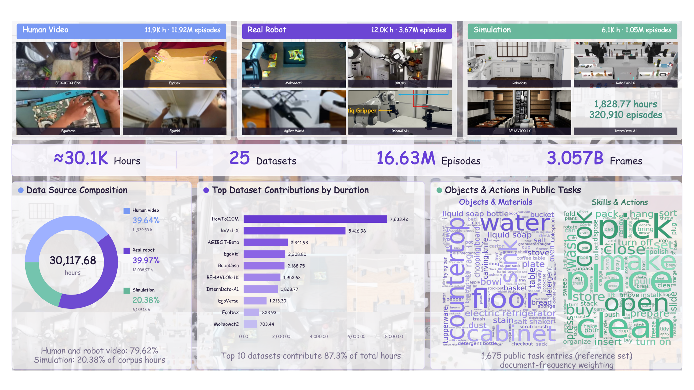

Abstract
Vision-language-action (VLA) models are limited by the scarcity and fragmentation of action-annotated robot data: different embodiments define incompatible action spaces, while abundant human videos remain unusable because they lack action labels. We present a unified latent-action framework that turns heterogeneous manipulation video into a shared, embodiment-agnostic action space. We first train RynnLAM, a latent action model, fully self-supervised to compress inter-frame dynamics into compact latent actions grounded in physical motion. Using RynnLAM as a scalable auto-labeler we densely annotate a large multi-source corpus, then pretrain RynnVLA-Latent, a Mixture-of-Transformers VLA that generates latent-action chunks from language and multi-view observations via flow matching; post-training retargets the same objective to robot-specific action spaces, requiring action-labeled demonstrations only for final embodiment alignment.
Key Highlights
- Metric, 3D, camera-invariant latent actions:
RynnLAM grounds latents in future visual features, dynamic 3D flow and explicit camera-ego-motion decoupling. - Label once, align everything:
One shared latent-action space absorbs robot, simulation and human egocentric video under a single supervision signal. - Pretrain then retarget:
Flow-matching pretraining on latent actions, then post-training retargets the same objective to the target robot's action space with no extra decoder.
Overview
2 · Auto-labeling. RynnLAM annotates a 25-dataset multi-embodiment corpus into one shared latent-action space.
3 · Pretraining. A Mixture-of-Transformers policy (RynnBrain VLM + narrow action expert) generates latent-action chunks via flow matching.
4 · Post-training. The same flow-matching objective is retargeted to the target robot’s action space; no separate decoder is added.
Training Data
Pre-training corpus of RynnVLA-Latent. Human egocentric video, real-robot manipulation and simulation rollouts are all relabelled by RynnLAM into one shared latent-action space, so heterogeneous sources contribute to a single policy objective. Click the figure to enlarge.

Results
All benchmarks; RynnVLA-Latent rows are placeholders (––) to be filled after evaluation completes.
| Method | Spatial | Object | Goal | Long | Avg |
|---|---|---|---|---|---|
| OpenVLA-OFT | 97.6 | 98.4 | 97.9 | 94.5 | 97.1 |
| π0 | 98.0 | 96.8 | 94.4 | 88.4 | 94.4 |
| π0.5 | 98.8 | 98.2 | 98.0 | 92.4 | 96.9 |
| Motus | 96.8 | 99.8 | 96.6 | 97.6 | 97.7 |
| Xiaomi-Robotics-0 | 98.8 | 100.0 | 98.8 | 97.2 | 98.7 |
| InternVLA-A1.5 | 98.6 | 99.8 | 98.6 | 98.4 | 98.9 |
| RynnVLA-Latent-2B | -- | -- | -- | -- | -- |
| RynnVLA-Latent-4B | -- | -- | -- | -- | -- |
| Method | Cam | Robot | Lang | Light | Bkg | Noise | Layout | Total |
|---|---|---|---|---|---|---|---|---|
| OpenVLA-OFT | 56.4 | 31.9 | 79.5 | 88.7 | 93.3 | 75.8 | 74.2 | 69.6 |
| π0.5 | 78.4 | 73.6 | 80.8 | 96.2 | 94.1 | 89.0 | 84.5 | 84.4 |
| Cosmos Policy | 75.8 | 63.3 | 81.7 | 96.5 | 88.9 | 92.7 | 82.2 | 82.2 |
| InternVLA-A1.5 | 83.1 | 55.1 | 86.9 | 96.4 | 98.2 | 95.6 | 85.2 | 84.8 |
| RynnVLA-Latent-2B | -- | -- | -- | -- | -- | -- | -- | -- |
| RynnVLA-Latent-4B | -- | -- | -- | -- | -- | -- | -- | -- |
| Method | Clean | Randomized | Avg |
|---|---|---|---|
| π0 | 65.9 | 58.4 | 62.2 |
| π0.5 | 82.7 | 76.8 | 79.8 |
| LingBot-VLA | 88.6 | 86.7 | 87.7 |
| InternVLA-A1 | 89.4 | 89.6 | 89.5 |
| Being-H0.7 | 90.2 | 89.6 | 89.9 |
| RynnVLA-Latent-2B | -- | -- | -- |
| RynnVLA-Latent-4B | -- | -- | -- |
| Method | Clean2Clean (easy) | Clean2Random (hard) |
|---|---|---|
| π0 | 46.4 | 16.3 |
| X-WAM | 70.0 | 25.8 |
| π0.5 | 70.7 | 46.0 |
| RynnVLA-Latent-2B | -- | -- |
| RynnVLA-Latent-4B | -- | -- |
| Method | In-Dist (SR/PS/IS) | Cross-Cat | Common Sense | Average | ||||||||
|---|---|---|---|---|---|---|---|---|---|---|---|---|
| π0 | 47.0 | 62.7 | 67.8 | 21.2 | 33.6 | 44.0 | 29.1 | 43.0 | 54.9 | 29.4 | 44.1 | 55.0 |
| π0-FAST | 56.2 | 66.8 | 72.4 | 31.0 | 38.2 | 47.8 | 38.0 | 48.6 | 56.8 | 39.8 | 49.5 | 58.6 |
| π0.5 | 65.4 | 77.8 | 80.4 | 38.2 | 49.7 | 52.0 | 43.9 | 57.3 | 60.0 | 48.1 | 62.3 | 64.9 |
| RynnVLA-Latent-2B | 58.5 | 71.2 | 81.2 | 30.3 | 40.1 | 53.3 | 26.2 | 39.9 | 59.8 | 37.2 | 50.6 | 68.4 |
| RynnVLA-Latent-4B | 67.8 | 80.3 | 83.9 | 48.0 | 60.7 | 68.2 | 44.6 | 53.8 | 54.1 | 53.2 | 64.3 | 71.6 |
| Model | Plate Placement | Steak Cooking | Plate Wiping | Table Cleaning | Steak Serving | Plate Retrieval |
|---|---|---|---|---|---|---|
| π0 | 80.00 | 34.29 | 71.43 | 22.86 | 37.14 | 45.71 |
| π0.5 | 82.86 | 28.57 | 77.14 | 25.71 | 40.00 | 45.71 |
| GR00T-N1.7 | 74.29 | 28.57 | 74.29 | 17.14 | 45.71 | 37.14 |
| RynnVLA-Latent-2B | 80.00 | 34.29 | 68.57 | 34.29 | 42.86 | 48.57 |
| RynnVLA-Latent-4B | 85.71 | 42.86 | 82.86 | 40.00 | 57.14 | 54.29 |
Real-Robot Demos
BibTeX
@article{rynnvla2026latent,
title = {RynnVLA-Latent: Latent Action Pretraining for Robotic Manipulation Foundation Models},
author = {Haoyu Zhao and Xingyue Zhao and Zhian Su and Bohan Hou and Yinzhou Tang and Fengyi Wang and Kehan Li and Yuming Jiang and Siteng Huang and Xin Li and Zhongyu Li},
year = {2026}
}